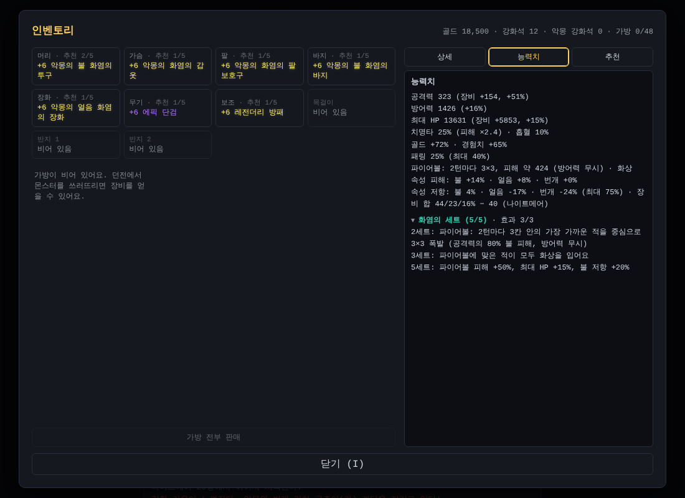

파이어볼, 프로스트 노바, 체인 라이트닝
오늘은 나이트메어를 도는 재미를 키우는 날이었어요. 너무 적던 골드를 늘리고, 세트를 맞추면 스킬이 생기는 속성 세트 세 가지를 만들었어요. 세트에 밀리던 레전더리에도 새 힘을 붙였어요.
나이트메어 골드가 너무 적었어요
"나이트메어에서 줍는 골드 더미가 너무 적다"는 피드백이 있었어요. 계산해 보니 정말 그랬어요.
- 나이트메어 한 층 골드는 약 1,000~4,600으로, 일반 75층 한 층(약 5,300)보다 적었어요
- 나이트메어 한 층은 몬스터가 20~50마리라 일반 75층(80~150마리)보다 적었거든요
- 1~50층을 다 깨도 약 12만 골드로, 일반 1~75층 한 번보다도 적었어요
그래서 나이트메어 몬스터가 나오는 곳에서는 이렇게 바꿨어요.
- 몬스터 처치 골드 ×3 (보스·황금 고블린 포함)
- 골드 더미 ×8
- 나이트메어 아이템 판매 골드 ×3 (100레벨 레전더리 435 → 1,305)
층 돌파 보상
그래도 "처음 들어간 1층에서는 할 수 있는 게 없다"는 이야기가 나왔어요. 몬스터가 적은 앞쪽 층이 문제였죠. 처치 골드를 더 올리면 몬스터가 많은 깊은 층에서 더 크게 늘어서, 앞쪽 층 문제는 덜 풀려요.
그래서 층 돌파 보상을 넣었어요. 나이트메어에서 계단을 밟아 다음 층으로 갈 때, 그 층 나이트메어 레전더리 상점 가격의 75%를 받아요 (1층 5,100 ~ 50층 8,040).
- 1층에서 약 9,000골드
- 5층까지 누적 약 49,000골드. 4층 상점에서 레전더리를 사고 진열을 바꾸고도 고대 굴리기를 10번쯤 할 수 있어요
- 1~50층 한 번이면 약 74만 골드
속성 세트: 세트를 맞추면 스킬이 생겨요
아이디어는 "속성마다 방어구 5세트를 만들고, 세트 효과로 스킬이 생기게 하자"였어요. 나이트메어 전용이고, 나이트메어에서 얻은 세트 방어구는 시험·화염·서리·뇌전 세트가 1/4씩 나와요. 2세트부터 스킬이 2턴마다 자동으로 나가요.

- 🔥 화염의 세트 (무리 사냥): 2세트 파이어볼. 3칸 안 가장 가까운 적을 중심으로 3×3 폭발, 공격력의 80%. 4세트는 피해 +50%·최대 HP +15%, 5세트는 맞은 적 모두 화상
- ❄ 서리의 세트 (생존): 2세트 프로스트 노바. 내 주변 8칸의 적 모두에게 공격력의 70%. 4세트는 피해 +50%·방어력 +10%, 5세트는 맞은 적 모두 느려짐
- ⚡ 뇌전의 세트 (보스): 2세트 체인 라이트닝. 가장 가까운 적부터 2번 튕기며 한 번에 40%. 5세트는 4번 튕기고, 다른 적이 없으면 같은 적이 다시 맞아요. 거기에 감전(3턴 동안 받는 피해 +20%)까지
이 게임은 캐릭터가 바라보는 방향이 없어서, 파이어볼은 "앞으로 쏘기" 대신 가장 가까운 적을 중심으로 터지게 했어요. 쏠 적이 없으면 준비된 채로 기다려요.
시뮬레이션으로 역할 나누기
처음 안대로면 문제가 있었어요.
- 화염은 무리를 빨리 잡지만, 25층에서 5마리에게 둘러싸이면 쓰러질 확률이 80%나 됐어요. 피해를 올려도 그대로였고, 최대 HP +15%를 넣으니 줄었어요
- 뇌전은 처음에 한 번에 60%였는데, 보스도 무리도 가장 빨라서 다른 세트를 고를 이유가 없었어요. 그래서 40%로 낮췄어요
결과적으로 각 세트의 역할이 갈렸어요. 시험 = 균형, 화염 = 무리, 서리 = 생존, 뇌전 = 보스. 시험 2 + 속성 3처럼 섞어 입는 것도 되지만 5세트보다는 약해서, 처음엔 섞어 입다가 5세트를 맞추는 게 목표가 돼요.
세트 종류가 늘면 같은 시드에서 다른 아이템이 나와서 규칙 개정 r4를 붙였어요. 이미 가진 아이템은 그대로예요.
전설의 힘: 레전더리도 쓸모 있게
"세트가 너무 강해서 레전더리는 거쳐 가는 수준"이라는 피드백이 있었어요. 시뮬레이션해 보니 능력치가 모두 최대인 고대 레전더리 5부위도 세트와 비슷한 수준이었어요.
그래서 전설의 힘을 만들었어요. 레전더리의 완성도(능력치가 범위 안에서 얼마나 높게 붙었는지, 고대 = 100%)에 따라 레전더리 하나마다 공격력·방어력·최대 HP가 최대 +12% 올라요.
- 완성도 60% 밑은 0, 80% +3%, 90% +7%, 100% +12%
- 모든 속성 저항도 하나에 최대 +4%
- 이미 가진 레전더리에도 바로 적용돼요
처음엔 완성도에 그대로 비례시켰더니 평범한 레전더리도 세트만큼 좋아졌어요. 끝으로 갈수록 가파른 곡선으로 바꾸니, 고대 레전더리 5부위는 가장 고르게 강하고 세트는 각자 한 가지에서 앞서는 모양이 됐어요.
저항 75%가 너무 쉬웠어요
"속성 저항을 너무 쉽게 75% 찍는다, 강화로 저항이 올라서 그런 것 같다"는 피드백이 있었어요. 그런데 재 보니 강화를 빼도 거의 그대로였어요. 진짜 원인은 저항 줄 범위 자체였어요.
- 새로 얻는 아이템의 속성 저항 줄은 7~20%, 모든 속성 저항은 4~7%
- 강화로 저항 줄은 오르지 않아요
- 예전 아이템의 저항 줄은 새 최대치까지만 적용돼요
이제 "열심히 모으면 맞출 수 있는" 정도가 됐어요.
작은 개선들
- 가방 기록이 끝없이 쌓여서, 여러 번 돌면 브라우저 저장소 한도에 닿을 수 있었어요. 최근 200개만 남기게 고쳤어요
- 로비가 초당 60번 화면을 다시 그려서 CPU를 많이 썼어요. 초당 20번으로 줄여 약 21% → 7%. 휴대폰 배터리가 아껴져요
- 아이템 이름이 "고대 +10 악몽의 번개 화염의 투구"처럼 길어지면서 인벤토리가 길어진 것도 정리했어요
- 가끔 실패하던 테스트도 원인을 찾아 고쳤어요. 테스트 캐릭터가 걸어가다 파란 포탈을 밟아 던전으로 들어가 버린 거였어요
오늘 배운 것
- 세트끼리 비교할 때는 같은 방어구에 세트만 바꿔야 공정해요. 아이템이 다르면 능력치 차이가 세트 효과보다 크게 결과를 흔들어요
- 원인을 먼저 재 봐야 해요. 저항 문제는 강화가 아니라 줄 범위였어요
- 보너스는 곡선이 중요해요
- 피해를 올리는 것보다 방어 쪽 효과가 쓰러질 확률을 더 크게 바꿔요
다음에는
새 속성 세트들이 실제로 어떤지 지켜보면서 배율을 조정할 거예요. 파이어볼과 체인 라이트닝은 던전 크롤러의 나이트메어에서 만날 수 있어요!